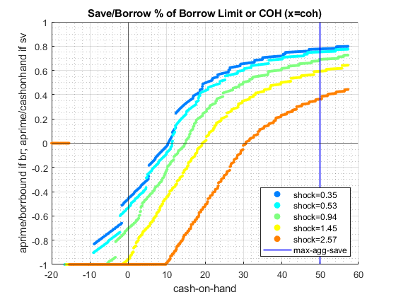

Contents
ipwkbz_VF_VECSV Algorithm Testing, Standard Simulation Grids
close all; it_param_set = 4; % Shared parameters it_w_perc_n = 100; it_z_n = 15; fl_coh_interp_grid_gap = 0.05; fl_w_interp_grid_gap = 0.05; it_c_interp_grid_gap = 10^-4;
Simulate Save/Borrow, Can Default: cmin = 0.00001, choose not to default
Allow for default, but very low cmin.
see that the resulting policy function does not allow distribution to exceed below -9.32203, the additional borrowing allowed for default does not matter because utility from default is so terrible with c min = 0.00001.
[param_map, support_map] = ffs_ipwkbz_set_default_param(it_param_set); % allow for borrowing, when using a very large negative value for fl_b_bd % that means the natural borrowing constraint will bind. param_map('fl_b_bd') = -20; param_map('bl_default') = 1; param_map('fl_c_min') = 0.00001; % shared parameters param_map('it_w_perc_n') = it_w_perc_n; param_map('it_ak_perc_n') = param_map('it_w_perc_n'); param_map('it_z_n') = it_z_n; param_map('fl_coh_interp_grid_gap') = fl_coh_interp_grid_gap; param_map('fl_w_interp_grid_gap') = fl_w_interp_grid_gap; param_map('it_c_interp_grid_gap') = it_c_interp_grid_gap; % Display Parameters support_map('bl_display') = false; support_map('bl_display_final') = false; support_map('bl_time') = true; support_map('bl_profile') = false; % Call Program ff_ipwkbz_vf_vecsv(param_map, support_map);
Elapsed time is 8.434661 seconds. Warning: Directory already exists.

Simulate Save/Borrow, Can Default: cmin = 0.001, default takes place
now borrowing level feasible increases significantly given minimum consumption and default. see ffs_ipwkbz_get_funcgrid_nodefault for additional information.
higher cmin than before, see that the lowest asset level reached is now lower. See that around -10, there is no a' below the 45 degree line in the asset choice graph.
[param_map, support_map] = ffs_ipwkbz_set_default_param(it_param_set); % allow for borrowing, when using a very large negative value for fl_b_bd % that means the natural borrowing constraint will bind. param_map('fl_b_bd') = -20; param_map('bl_default') = 1; param_map('fl_c_min') = 0.001; % shared parameters param_map('it_w_perc_n') = it_w_perc_n; param_map('it_ak_perc_n') = param_map('it_w_perc_n'); param_map('it_z_n') = it_z_n; param_map('fl_coh_interp_grid_gap') = fl_coh_interp_grid_gap; param_map('fl_w_interp_grid_gap') = fl_w_interp_grid_gap; param_map('it_c_interp_grid_gap') = it_c_interp_grid_gap; % Display Parameters support_map('bl_display') = false; support_map('bl_display_final') = false; support_map('bl_time') = true; support_map('bl_profile') = false; % Call Program ff_ipwkbz_vf_vecsv(param_map, support_map);
Elapsed time is 8.768020 seconds. Warning: Directory already exists.
Simulate Save/Borrow, Can Default: cmin = 1, degenerate, borrow to max
with cmin = 1, we have garanteed consumption regardless debt owed. Now the distribution generated by the policy functions will be degenerate. In the negative asset region, all choices move towards the defaulting states.
[param_map, support_map] = ffs_ipwkbz_set_default_param(it_param_set); % allow for borrowing, when using a very large negative value for fl_b_bd % that means the natural borrowing constraint will bind. param_map('fl_b_bd') = -20; param_map('bl_default') = 1; param_map('fl_c_min') = 1; % shared parameters param_map('it_w_perc_n') = it_w_perc_n; param_map('it_ak_perc_n') = param_map('it_w_perc_n'); param_map('it_z_n') = it_z_n; param_map('fl_coh_interp_grid_gap') = fl_coh_interp_grid_gap; param_map('fl_w_interp_grid_gap') = fl_w_interp_grid_gap; param_map('it_c_interp_grid_gap') = it_c_interp_grid_gap; % Display Parameters support_map('bl_display') = false; support_map('bl_display_final') = false; support_map('bl_time') = true; support_map('bl_profile') = false; % Call Program ff_ipwkbz_vf_vecsv(param_map, support_map);
Elapsed time is 7.953365 seconds. Warning: Directory already exists.